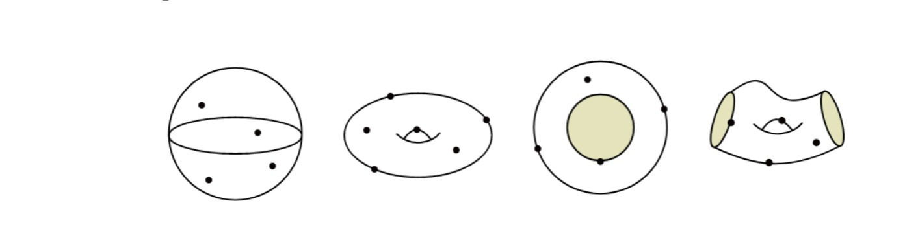

Intro
Hi! My name is Andrea and I am a Trading Systems Analyst at FinIQ in London, where I build and validate pricing models for FX vanilla and exotic options and work with sales and institutional clients on OTC structured products. Before that I did an internship in Fixed Income Sales at Mediobanca in Milan, and I completed the MSc in Quantitative Finance and Risk Management (MAFINRISK) at Bocconi University in September 2025. You can download my CV here.
I studied mathematics first, and I am still interested in the following subjects:
- rings and fields theory,
- Galois theory,
- hyperbolic geometry,
- algebraic combinatorics,
- algebraic number theory,
- Cluster algebras,
- category theory & homological algebra,
- quiver representation theory
- option pricing theory,
- financial mathematics;
I've written my Bachelor thesis at Vrije Universiteit Amsterdam on the combinatorial aspects of surface Cluster algebras and applications to Frobenius' conjecture; which has been awarded a 9 out of 10 grade, which you can read here! As far as other interests, I'm an avid gym bro and have been on a bodybuilding track since September 2022, and I also really enjoy travelling!
I started learning Kona to optimize my Python script (for calculating expected move of a stock using option prices), and K has since become my main language: I now write K3, K6 and kdb+/q, both at work and on the side. Most of my free time goes into Amber, my own array language written in C, with documentation at amber-lang.org. For fun, I am also doing ProjectEuler problems (friend key: 1885079_du9SO9rxCr4OmSodYjJS96zZHxH1cGKy). Here are some solutions written in Kona!
Work

Trading Systems Analyst, FinIQ (London, Mar 2026 – present)
I develop and maintain production pricing models for FX vanilla and exotic options (barriers, digitals, TARFs, accumulators) in FinIQ's hybrid pricing engine, construct volatility surfaces and implement stochastic and local volatility models. I engineered an automated validation and stress-testing framework for an SLV pricing API: model-free no-arbitrage checks (put-call and in/out parity, Greek identities, finite-difference sensitivities), generated stress scenarios and per-RFQ audit reports. I use K (kdb+/q, K3, K6) for time-series modelling and analysis of pricing and market data, partner with sales and institutional clients on pricing and electronic execution of OTC structured products across FX and equity derivatives, and deliver quant sessions on pricing complex structured product payoffs and on random number generation for Monte Carlo simulation, to audiences of up to ~200.
Fixed Income Sales Intern, Mediobanca (Milan, Jul 2025 – Dec 2025)
Produced market reports, trade analysis and pricing support for institutional clients, and worked with the trading desk on market trends and liquidity.
Software Developer, marXact (Hilversum, Sep 2023 – Apr 2024)
Developed real-time signal-processing software in Python for GNSS receivers, using tilt compensation to improve positioning accuracy in low-visibility environments, and implemented an Extended Kalman Filter (EKF) for real-time state estimation in a non-linear system.
A small, fast array language that talks like q: dictionaries, tables and keyed tables, the whole join family (including as-of and window joins), qSQL, tick data and dates, in one self-contained C binary built on ngn/k. Column attributes are implemented in C, tables can live on disk as memory-mapped column files, and big queries run across every core. It is on release 2.7.2 with 1,555 test cases, and around it sit Python bindings, an Arrow stream, a Jupyter kernel, a VS Code language server, a Grafana datasource, a profiler and an offline AI co-pilot. You can try it in the browser at amber-lang.org.
A distributed, fault-tolerant kdb+ tick architecture: tickerplant (logging and routing), in-memory RDB, on-disk HDB and a parallel unified gateway. A simulated market data feed of 20,000 updates/sec stress-tests tickerplant stability and the RDB-to-HDB end-of-day flush, and an asynchronous, parallel gateway query handler merges historical and real-time data in a single query.
A zero-loop, fully vectorised backtesting engine in pure K, ported to kdb+/q to leverage its C-optimised vector primitives. An O(N) prefix-sum and boolean-masking pipeline drives the parameter grid searches, evaluating 8.1 billion matrix operations over 164,000+ data points; parallelised across 10 threads with q's peach, it peaks at about 2.34 billion ops/sec (3.4 s end to end).
Option pricers in K
Garman-Kohlhagen FX option pricing with delta and vega, closed-form barrier option pricing covering all sixteen Reiner-Rubinstein cases, and a Black-Scholes calculator, all written in K with a hand-built normal CDF.
Combinatorial aspects of surface Cluster algebras and applications to Frobenius' conjecture.
Abstract: Since Frobenius stated his conjecture on the uniqueness of Markov triples in 1913, many have attempted to crack it; and in doing so uncovered essential knowledge about the conjecture. In this report, we seek to explore various techniques within Cluster algebra and utilize them in order to better understand the behaviour of Markov numbers. We use palindromification of continued fractions and connect them to the idea of snake graph to attain a reformulation of Frobenius’ conjecture in Cluster algebraic terms. Consequently, we apply Skein relations within the natural number lattice N × N to define left and right deformations around lattice points to provide a few result on the ordering of Markov numbers; and prove a conjecture posed by Aigner in [A].
Four Color Theorem
Abstract: In 1852 Francis Guthrie was coloring in a map of the United Kingdom, when he noticed that to color in any map, he could use as little as four colors. This observation reached mathematician Augustus De Morgan, who in turn shared it with the mathematical world. The Four-Color Theorem emerged: a conjecture stating that to color in any figure with regions, where regions sharing a common boundary are colored differently, four colors would suffice...
Frieze Patterns of Integers and Triangulated Polygons
Abstract: This report seeks to examine finite frieze patterns of non negative integers, introduced in the early seventies by Coxeter. There are two primary aims of this paper. Firstly, it aims to prove the bijection between triangulations of convex n-gons and frieze patterns of order n discovered by Conway and Coxeter and discuss the construction of a frieze pattern from its associated convex polygon.
Finitely generated modules over principal ideal domains
Abstract: The purpose of this report is to give a detailed description about the structure and behaviour of finitely generated modules over principal ideal domains (PIDs), that are especially nice rings. This type of analysis is particularly important if we apply it to the ring of integers, ℤ, which is a PID; as it allows for a proof of the Fundamental Theorem of Finitely Generated Abelian Groups.
Mathematical Modeling of Stochastic Systems: Forensic DNA
Abstract: In this report we will focus on nuclear DNA, which is found in almost every cell of our body, subdivided into chromosomes. It is known that each of us has 23 pairs of chromosomes. One pair is indicative of our gender, i.e., men have one X-chromosome and one Y-chromosome, while women have two X-chromosomes.
Mathematical Modelling of a Shock Absorber and Spring System
Abstract: Driving comfort and safety are essential considerations when behind the wheel. A shock absorber is typically used to keep the wheels in good contact with the road, absorbing and dampening any sudden motion. This project aims to develop a mathematical model of a shock absorber and draw conclusions regarding its optimal design.
Mathematical Modelling of a Prey vs Predator model
Abstract: As the number of endangered and extinct species continues to grow, it is becoming more and more important to understand how animals interact with each other in an ecosystem. Throughout this paper will explore how the populations of two species can change in density over time or under different experimental conditions...